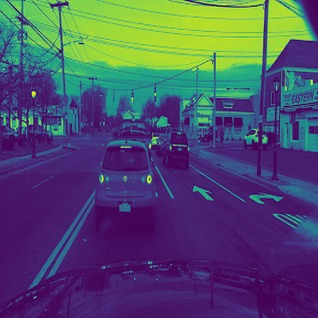
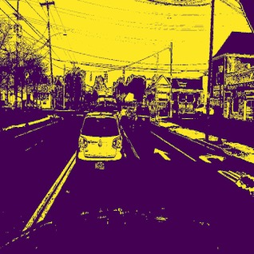
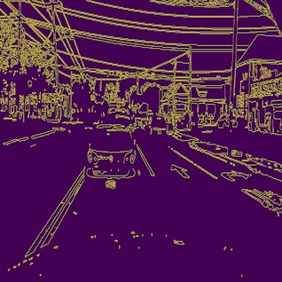

Grayscale
White/Yellow Mask
Edges
Language: Python
The algorithm takes an image of a driver on the road and produces the same image but with the road lanes highlighted. The datasets were taken from Berkeley's Deep Drive dataset. The most important part about the project was knowing where to highlight edges. This can be done in 3 steps: reduce noise, extract yellow and white lines, and produce relavent straight Lines. These 3 steps correspond to the images above. The algorithm will be trained to detect which of the edges correspond to road lines. I used SIFT and KNN to detect the relavent edges.